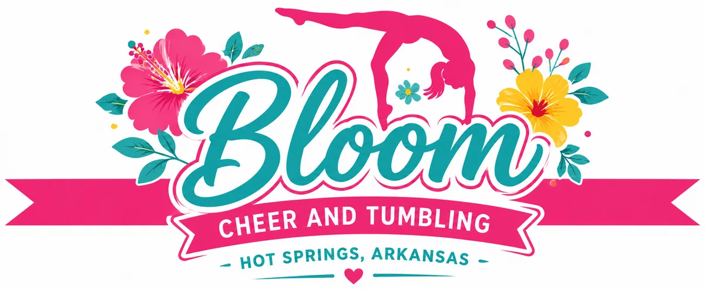

FAQ
General Questions
We offer programs for a variety of ages and skill levels. Class options may vary depending on the athlete’s age, experience, and goals. We will help families choose the class that best fits their athlete.
No experience is required for beginner classes. We welcome athletes who are brand new, as well as athletes who have previous cheer or tumbling experience. Each athlete will be placed in a class that matches their current skill level.
Yes! Trial classes are a great way for athletes and families to experience our gym, meet our coaches, and see which class is the best fit.
Classes & Programs
We offer tumbling, cheer skill classes, beginner classes, private lessons, clinics, and open gym opportunities. As the gym grows, additional programs may be added based on athlete interest and community needs.
Tumbling focuses on skills such as rolls, cartwheels, walkovers, handsprings, tucks, and other floor skills. Cheer classes focus on cheer motions, jumps, stunts, tumbling, strength, and performance skills. All-star cheer is a competitive team program where athletes train and perform a full routine at competitions.
Yes. Beginner classes are designed for athletes who are new to cheer or tumbling. Coaches focus on building strong fundamentals, proper technique, body control, confidence, and safety.
Yes, private lessons may be available depending on coach availability. Private lessons are helpful for athletes who want extra practice, individualized instruction, or focused help on specific skills.
Yes, open gym opportunities may be offered as part of our schedule. Open gym gives athletes extra time to practice skills in a supervised environment.
We will help place your child in the class that best matches their age, experience, and current skill level. If needed, a coach may evaluate your athlete to make sure they are placed safely and appropriately.
All-Star / Competitive Cheer
Yes, Bloom Cheer and Tumbling plans to offer all-star competition cheer. Our goal is to give athletes in the Hot Springs area an opportunity to train, compete, and grow without having to travel far from home.
Age groups will depend on athlete interest, enrollment, and skill levels. Teams will be formed based on what allows athletes to be successful, safe, and competitive.
Yes, evaluations will be required for competitive cheer. Every athlete will be placed on a team, but teams will be formed based on each athlete’s age, skill level, experience, and readiness. This helps us make sure athletes are placed where they can grow, contribute, and be successful while keeping teams safe and competitive.
Competitive cheer requires a higher level of commitment than regular classes. Athletes are expected to attend practices, work hard, support their teammates, and participate in scheduled performances or competitions.
Competitive cheer expenses may include tuition, registration fees, uniforms, practice wear, competition fees, and possible travel costs. We will communicate costs clearly so families understand expectations before committing.
Beginners may be able to join depending on the team level and program structure. We believe every athlete has to start somewhere, and we will work to create opportunities for athletes who are ready to learn, commit, and grow.
Registration & Tuition
Families can register online through the Bloom Cheer and Tumbling registration page or contact us for help choosing the right class. We will provide class options, pricing, and any required forms before your athlete begins.
Yes, tuition is typically paid monthly. Monthly tuition helps reserve your athlete’s spot in class and allows us to maintain consistent coaching, scheduling, and programming.
A registration fee may be required when enrolling. This fee helps cover administrative costs and reserves your athlete’s place in the program.
Sibling discounts may be available. We want to make our programs accessible for families with more than one athlete whenever possible.
Cancellation policies will be communicated during registration. In general, families should provide notice before withdrawing from a class so we can update billing and offer the spot to another athlete.
Accepted payment methods will be shared during registration. We plan to make payment as simple and convenient as possible for families.
What to Wear / Bring
Athletes should wear comfortable athletic clothing that allows them to move freely. Fitted shirts, shorts, leggings, or athletic wear are recommended. Clothing should not be too loose or distracting.
Cheer shoes may be recommended or required depending on the class or team. For beginner classes, athletes may be able to start with clean athletic shoes until specific requirements are shared.
Yes. Athletes should bring a water bottle to every class or practice. Staying hydrated is important, especially during tumbling, conditioning, and cheer activities.
No. For safety reasons, athletes should not wear jewelry, chew gum, or wear loose clothing during class. Hair should be pulled back and secured away from the face.
Parent Information
Parent viewing policies may depend on the class and facility setup. We want parents to feel informed while also helping athletes stay focused and engaged during instruction.
Parents should wait in the designated parent area, if available. To keep athletes safe, only coaches and athletes should be on the practice floor unless otherwise invited by staff.
We will communicate important updates through the gym’s official communication channels, such as email, text, social media, or parent apps if used. Families should make sure their contact information stays current.
If your child misses class, please notify the gym when possible. Make-up options may depend on class availability and the reason for the absence.
Safety & Coaching
Our coaches are committed to providing safe, positive, and effective instruction. Athletes will be coached with proper progressions, encouragement, and attention to technique.
Safety is a priority at Bloom Cheer and Tumbling. Coaches use proper skill progressions, spotting when appropriate, structured class plans, and clear gym rules to help athletes train safely.
Yes, coaches may spot tumbling skills when appropriate. Spotting is used to help athletes learn proper technique and build confidence while progressing safely.
That is completely normal. Our coaches work to create a welcoming and encouraging environment. We help new athletes build confidence step by step and celebrate progress at every level.
Athletes move up when they demonstrate the required skills safely, consistently, and with proper technique. Readiness is based on more than just completing a skill one time; athletes should show control, strength, and confidence.
Facility Rules
Gym rules are designed to keep athletes safe and focused. Athletes should listen to coaches, use equipment properly, stay in designated areas, respect others, and follow all safety instructions.
Siblings may wait in the lobby or designated waiting area if space allows, but they must be supervised by a parent or guardian. For safety reasons, siblings who are not enrolled should not be on the gym floor.
Water is allowed and encouraged. Food and other drinks should stay in designated areas only. No food, gum, or sugary drinks should be on the practice floor.
Athletes should arrive on time and be picked up promptly at the end of class or practice. Parents should make sure athletes are safely checked in and picked up by an approved adult.
Camps and Clinics
Yes, we may offer camps and clinics throughout the year. These may focus on tumbling, jumps, stunting, cheer skills, beginner training, or special events.